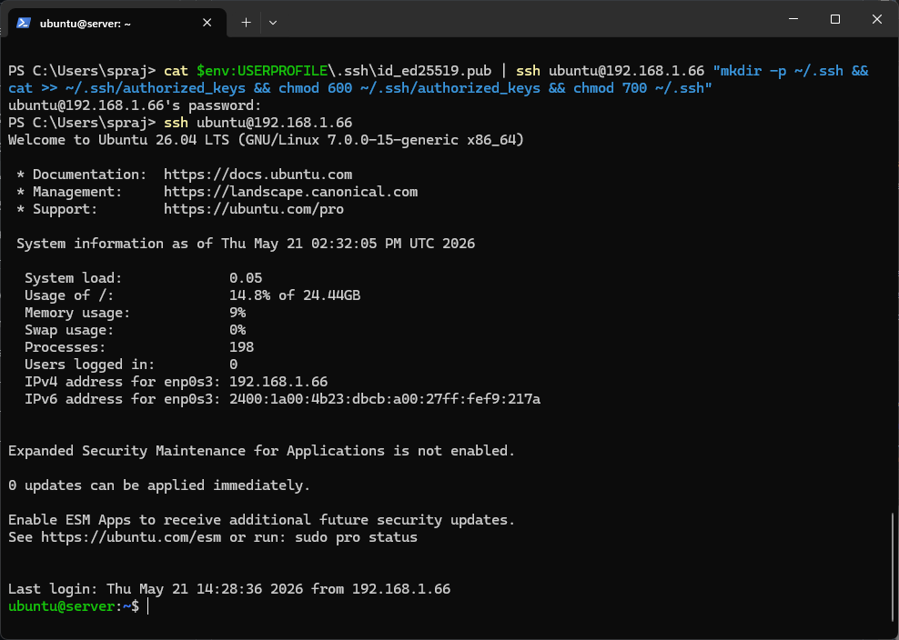
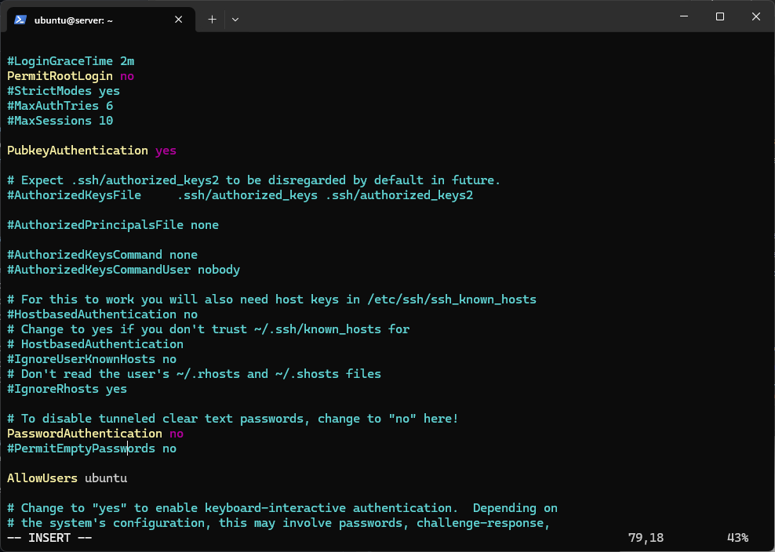
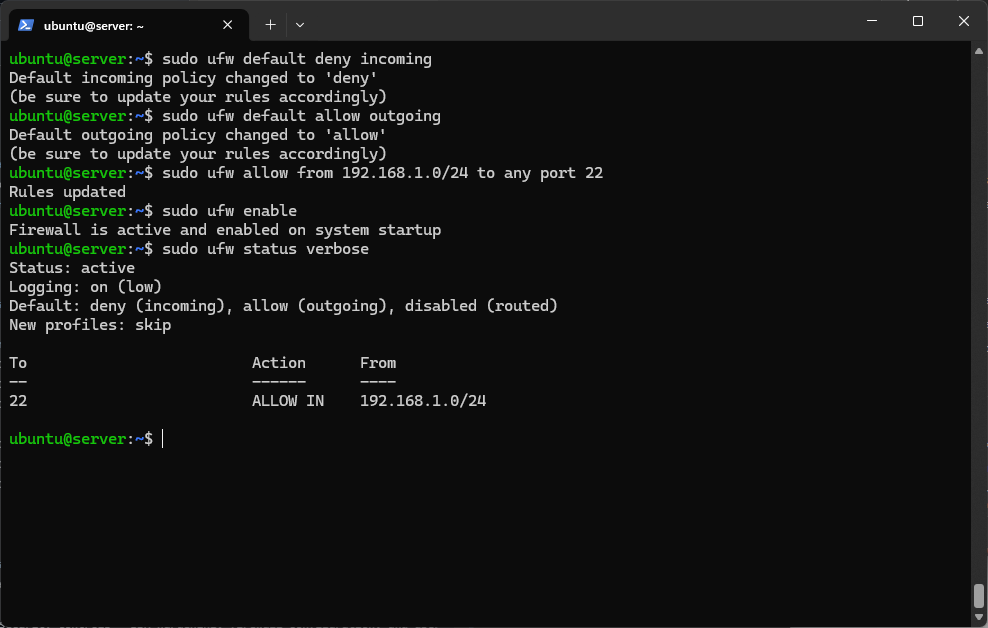
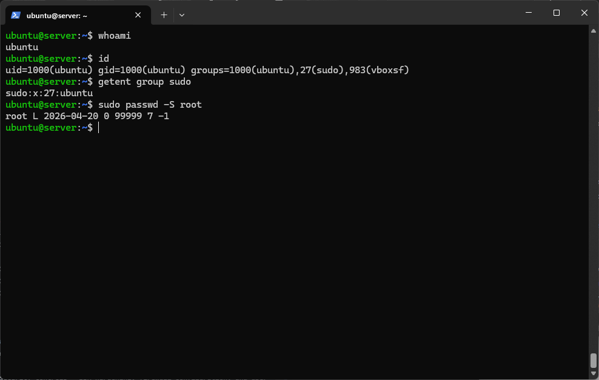

✅ Phase Deliverables
| Deliverable | Status |
|---|---|
| SSH key-based authentication configured | Done |
| Firewall configured (SSH from workstation only) | Done |
| Non-root administrative user created | Done |
| SSH access evidence (screenshots) | Done |
| Configuration files — before/after comparisons | Done |
| Firewall ruleset documentation | Done |
| Remote administration evidence | Done |
🔑 SSH Key-Based Authentication
Replacing password authentication with cryptographic key pairs — industry standard for secure server access.
Step 1 — Generate SSH keypair on Windows workstation
PS C:\Users\spraj> ssh-keygen -t ed25519 -C "cmpn202-A00026193" Generating public/private ed25519 key pair. Enter file in which to save the key (C:\Users\spraj/.ssh/id_ed25519): Enter passphrase (empty for no passphrase): Your identification has been saved in C:\Users\spraj/.ssh/id_ed25519 Your public key has been saved in C:\Users\spraj/.ssh/id_ed25519.pub
Step 2 — Copy public key to server
PS C:\Users\spraj> cat $env:USERPROFILE\.ssh\id_ed25519.pub | ssh ubuntu@192.168.1.66 "mkdir -p ~/.ssh && cat >> ~/.ssh/authorized_keys && chmod 600 ~/.ssh/authorized_keys && chmod 700 ~/.ssh"
Step 3 — Test key-based login (no password prompt)

Step 4 — Harden sshd_config
Before and after comparison:
# Before #PermitRootLogin prohibit-password #PubkeyAuthentication yes PasswordAuthentication yes # After hardening PermitRootLogin no PubkeyAuthentication yes PasswordAuthentication no AllowUsers ubuntu Banner /etc/issue.net

🔥 Firewall Configuration (UFW)
Configuring UFW to deny all incoming traffic except SSH from the workstation subnet only.
Commands executed
ubuntu@server:~$ sudo ufw default deny incoming ubuntu@server:~$ sudo ufw default allow outgoing ubuntu@server:~$ sudo ufw allow from 192.168.1.0/24 to any port 22 ubuntu@server:~$ sudo ufw enable ubuntu@server:~$ sudo ufw status verbose
Firewall ruleset evidence

👤 User & Privilege Management
Verifying non-root administrative user configuration following principle of least privilege.

🖥️ SSH Access Evidence
Demonstrating successful SSH connection from Windows workstation to Ubuntu server.
Initial password-based connection (Week 1)

Key-based connection (no password prompt)
⌨️ Remote Administration Evidence
All server configuration performed exclusively via SSH — no direct console access used.
ubuntu@server:~$ uptime ubuntu@server:~$ sudo ufw status verbose ubuntu@server:~$ sudo systemctl list-units --type=service --state=running ubuntu@server:~$ sudo fail2ban-client status ubuntu@server:~$ bash ~/security-baseline.sh
📝 Week 4 Reflection
This week marked the transition from planning to implementation. Configuring SSH key-based authentication required careful sequencing — the key must be copied to the server before disabling password authentication, otherwise access is permanently lost.
The UFW firewall configuration highlighted an important trade-off: restricting SSH to only the workstation subnet (192.168.1.0/24) significantly reduces attack surface but means the server cannot be accessed from any other location. This is acceptable for a coursework environment but would require a VPN solution in production.
Challenge encountered: Initial key copy command failed because it was run inside the SSH session rather than on Windows. The fix was to exit the server session first and run the command from Windows PowerShell — a good lesson in understanding which machine commands run on.